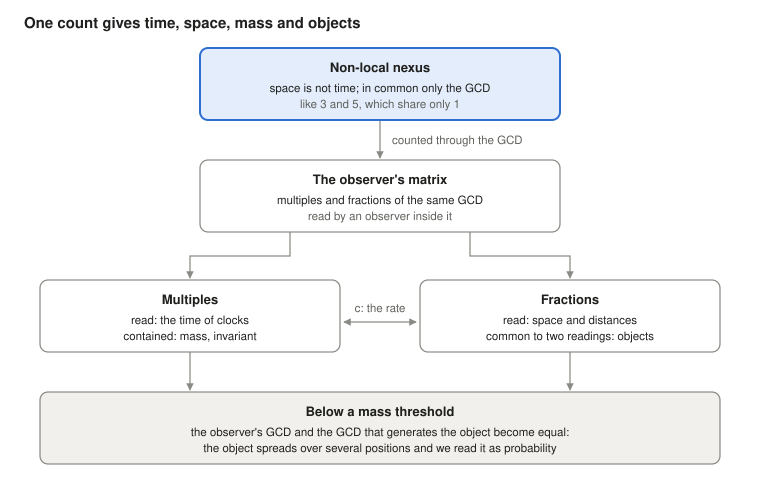

Who enforces the laws of physics? No one, if matter is the relation itself
Ugo Lanciano · Independent researcher, Locri, Italy · ORCID 0009-0008-7618-9635
Version 2.68.1, 2026-10-26 · Archived on Zenodo: 10.5281/zenodo.23672394 · Licence CC BY 4.0 · Developed with the help of AI assistants, as declared in the record.
Full text, student version (PDF) · read it on this page · versione italiana
The student version was written with an AI assistant from the archived text. The archived text remains on Zenodo: 10.5281/zenodo.23672394.
Abstract
Philosophers ask who or what makes the laws of physics hold everywhere and always. This deposit, written for philosophers of physics, sets out the author's answer: matter does not obey relations, it is the relations, so the laws need no guardian, and their necessity is a necessity of identity, as in arithmetic. It shows the thesis at work on a clock, where two declared premises give Einstein's proper time as the geometric mean of two coprime light sides, and it shows how the same framework reads the dimensions of space, objects, mass, quantum probability and the direction of time. It also says which sense of «non-local», the foundation of the framework, is meant: not located in space and time, with non-separability as a consequence; Bell correlations are read with a retrocausal loop with local mediation, and action at a distance is excluded. For each thesis it says what rests on registered calculations, what is a premise and what is open.
Keywords
ontic structural realism; laws of nature; necessity of identity; mathematical universe; emergent spacetime; non-locality; non-separability; Pythagoreanism; relational quantum mechanics; quantum Darwinism; retrocausality; philosophy of physics; Mathematical Materiality
Reading path
Foundations: why the laws hold · next: Time dilation from counting events without pre-assigned places, and the Feynman checkerboard up to a moving atomic clock: registered lattice tests
Full text: student version
The student version was written with an AI assistant from the archived text; the archived text remains on Zenodo: 10.5281/zenodo.23672394. The same text is in the PDF. An Italian version is also available: versione italiana.
Student version of MM record 2.68.1 (DOI 10.5281/zenodo.23672394), written with an AI assistant from the archived text; the archived text remains on Zenodo.
Ugo Lanciano · ORCID 0009-0008-7618-9635 · Mathematical Materiality (MM) 2.68.1 · archived text of 26 October 2026
What it is about. This text presents Mathematical Materiality (MM), a framework that reads physics starting from relations. It shows the basic idea, puts it to the test on a clock and says how the framework reads space, objects, mass, quantum mechanics and time. At the end it reports four objections from philosophers and the author's answers.
How to read it. The text is meant for students of physics or philosophy. Every technical word is explained the first time it appears. The words specific to MM are also collected in the glossary at the end. How the work was done (registrations, checks, files) is told in the last section.
The question: who guarantees the laws of physics?
The laws of physics hold everywhere and always. An electron here and an electron in a distant galaxy follow the same rules. Yet no one enforces them: there is no policeman of nature. What, then, guarantees them?
Mathematical Materiality (MM) answers this way: matter does not obey a relation, matter is the relation. This text sets out the thesis. Then it carries it out on a clock, with two declared premises. Finally it shows how the framework reads space, objects, mass, quanta and time.
The idea in three points.
- The laws have no guardian. A thing that broke them would not be disobedient: it would be another thing.
- There is no world behind the relations. The world we see is the web of relations, read from inside.
- Mathematics works on the world because it is the form of a relation of the world, freed in the mind.
The two classical answers. The question has two traditional answers. Both leave a gap between the rule and matter.
- The first puts the law in a "heaven of forms", a world of ideas separate from things, as in Plato. Then it is unclear how the law touches matter.
- The second puts the law in our language: laws would be descriptions made by us. Then it is unclear how language guesses the world.
There is also a more recent idea: the universe would be a computer simulation. This hypothesis puts a programmer in place of the heaven of forms. Vazza (2025) estimated that no one could pay for the energy needed by a machine that simulates the universe.
The Great Reversal. MM does not build a bridge over the gap: it says that there is no gap. In the framework this move is called the Great Reversal. Science has already made it five times. Five things looked like substances and turned out to be relations:
- caloric, the fluid that was thought to carry heat from one body to another;
- phlogiston, the substance that was thought to leave bodies when they burn;
- vital force, which was thought to distinguish living matter from non-living matter;
- the ether, the medium in which light was thought to travel;
- the prototype kilogram in Paris, the metal cylinder that for a long time was the kilogram itself; today the kilogram is defined by a ratio tied to the Planck constant.
Each time the world stayed the same. MM applies the same move to the last two items: matter and law.
The words of the framework. Eight words recur throughout the text. Their sense is enough here; each is taken up where it is needed and in the glossary at the end.
- Nexus: the starting link between two distinct terms. The reference example is the link between the numbers 3 and 5.
- Non-local: not located in space and time. It is a "pre-geometric" sense, that is, one that comes before geometry. It does not mean action at a distance (§1).
- GCD: the greatest common divisor, that is, the only part the two terms have in common. For 3 and 5 it is 1.
- Copies: the repetitions of the common unit when the nexus is counted. The 3 contains three copies of the 1, the 5 contains five.
- Matrix: the set of multiples and fractions of the GCD, read by whoever is inside it. Here "matrix" does not mean a table of numbers from linear algebra. The multiples appear as time, the fractions as space.
- Diffraction: the way the observer's matrix divides into fractions to give an object.
- Record: what an observer has collected. In the calculations it is the translation, chosen by the AI, of the observer's matrix.
- The AI's translation: the way a sentence of the author becomes a quantity that can be computed. It is a choice, and the text marks it. An outcome that depends on a translation concerns that translation, not the premise.
The explanatory premises (AI). The text also contains some "explanatory premises (AI)". They are bridges proposed by artificial intelligence between a sentence of the author and its translation into a calculation. The author accepted them into the text on 26 October. They are not theses of the author, and they leave him open questions (§10).
1. The starting point: two different terms and the only thing they have in common
The philosophical premises of MM fit in five sentences. They have the logical form of the relation between 3 and 5. They are the postulates of MM, like those from which Einstein started for relativity: they are not proved, they are judged by their consequences.
A reminder of arithmetic. Two whole numbers are coprime when they have no common divisors other than 1. 3 and 5 are coprime. 6 and 9 are not: they have 3 in common. The greatest common divisor (GCD) is the largest number that divides both. The least common multiple (LCM) is the smallest number that is a multiple of both. For 3 and 5, the GCD is 1 and the LCM is 15.
The five premises:
- At the start there is a difference. There is not a thing: there is a difference. A is different from B.
- To exist is reciprocal. Two entities exist for each other only through what they have in common. With nothing in common they could not even be called different.
- Two entities with nothing else in common are coprime. Nothing is attributed to two starting entities, except the fact of being two distinct entities: being-two. So they have no composite parts in common: they are coprime, like 3 and 5. A larger common part, like the 3 shared by 6 and 9, would be a third entity, and would ask for one more reason.
- The common unit is counted. Only the unit remains in common: GCD(3, 5) = 1. To belong to both, the unit has to be counted in each: three times in one and five in the other. Whatever something repeats in has parts, positions, distances: it has become local, that is, located in space and time.
- The copies are the same unit. Three copies of the unit are the same unit counted three times. Between two copies of the same thing there is no distance. So the local world carries within itself, disguised as a number, the distance-free link it started from.
The first nexus: space and time. The first nexus is the one between space and time. In its non-local phase space and time are terms without measure. There is only a logical distinction: space is not time. The two share only their GCD. When they are counted, they become the space and time we measure. This phase is not a distant level: it is present in every place and at every instant.
Four features of the nexus. The relation between 3 and 5 has four features, and they are the features of the nexus.
- No intermediary. 3 and 5 are linked by the 1 with no number "in between" that carries the link. This is what "non-local" means: the relation is not located in a place or at an instant, and it does not travel along a path.
- The terms do not come before the relation. The 1 is not a brick waiting to be used. It appears as the only thing the two have in common.
- Counting makes space and time. The least common multiple, 15, contains the 3 five times and the 5 three times. In the matrix that arises from counting, the multiples appear as time and the fractions as space. When several counts are combined (§2), time is their common growth and space is their spread, that is, how far the single counts differ from one another.
- Counting preserves the nexus. GCD × LCM = 1 × 15 = 3 × 5. However one counts in the local world, the product remains that of the starting relation.
Explanatory premise (AI): why numbers. The numbers are not quantities of space and time: in the non-local phase space and time have no measure. 3 and 5 are the arithmetic form of a logical situation: two distinct terms that have only a unit in common. Counting enters with premise 4. What is common, to belong to both, must appear in each; and appearing several times is already counting. That the two counts differ follows from premise 1: two equal terms would be one. A concrete case appears in the clock model (§2). There the step at rest (1, 1) does not distinguish the two directions of light. The asymmetry between two coprime counts, such as (3, 5), is instead what is read as motion.
The AI's reading of time and space. Two operations can be performed on the common unit: multiplying it and dividing it. Multiplication gives an ordered succession of growing totals: 1, 2, 3 and so on. Division gives distinct parts of a total that stays the same. Read from inside, the first is what we call time, the second what we call space. Time and space do not come before counting: they are the physical names of the accumulation and the partition of the same unit.
The author's words. The author puts it this way (10 October): «esiste un gradino sottostante della realtà dove uno strato non locale di logica materiale ha in sé le caratteristiche per generare il gradino di spazio e oggetti sovrastante» ("there is an underlying step of reality where a non-local layer of material logic has in itself the features to generate the overlying step of space and objects"). The common mistake, he adds, is to start from an objective space as a necessary element. In the volume MM 2.30 this is the pre-geometric programme: a programme in which the geometry of space is not the starting point, but has to come out of the framework. The sections that follow say how much of it has been carried out.
What "non-local" means
Non-locality is the foundation of the framework. In the philosophy of physics the word has at least four senses. MM uses one, derives a second as a consequence and excludes the other two.
A reminder: Bell's theorem. Bell's theorem (1964) concerns two particles prepared together and then measured far from each other. Bell showed that certain correlations between the measurements cannot be reproduced if three assumptions hold together:
- each system carries properties of its own, which the measurements reveal (separability);
- no influence travels faster than light;
- whoever measures chooses what to measure independently of the state of the source (independence of measurement settings).
Experiments find exactly those correlations. At least one of the three assumptions, therefore, has to be dropped.
The four senses of "non-local", and what MM does with them:
- Non-location (pre-geometry). The relation is not located in a place or at an instant. In MM: it is the sense of the framework, confirmed by the author on 13 October.
- Non-separability (holism). The whole system does not reduce to the union of parts separated in space, each with a state of its own. In MM: it is a consequence of the premise. The copies of a nexus are the same unit counted several times, not separate parts.
- Bell non-locality. Correlations that no account with Bell's three assumptions reproduces. In MM: the measured correlations are a datum. Of the three assumptions, the premise drops the first at the root, separability. The loop model with local mediation (§5), in which the link goes and returns along the light cones passing through the source, drops the third assumption: the independence of measurement settings from the state of the source. No influence at a distance.
- Action at a distance. An influence or a signal passes from one place to another faster than light. In MM: it is excluded. There are no signals, and Tsirelson's bound is respected (§5).
The author's words. Besides the sentence of 10 October, three premises say how the non-local enters the local world.
- On 13 October the AI proposed reading "non-local" as "not located in space and time". The author answered: «sì, vale anche per la lettura» ("yes, it holds for the reading too").
- On 24 September: «MCD originale è il passaggio dallo stadio non locale al [locale] della realtà […] la matrice nasce come diffrazione di MCD nello spazio e nel tempo come elementi separati» ("the original GCD is the passage from the non-local stage to the [local] stage of reality […] the matrix arises as a diffraction of the GCD in space and in time as separate elements").
- On 11 October: «è la base non locale della realtà che forza il cosiddetto presente ad una parte parziale della matrice di cui fa parte l'osservatore; il legame non locale "accende" solo parte della matrice totale» ("it is the non-local basis of reality that forces the so-called present to a partial portion of the matrix to which the observer belongs; the non-local link 'switches on' only part of the total matrix").
Explanatory premise (AI): in no place, present everywhere. What is in no place is not "elsewhere": it has no where. In the local world it appears as a copy. By premise 5, every copy is the same unit counted once more. This is why the non-local phase is present in every place and at every instant, without being spread out in space: every place and every instant is a copy of it. Non-separability follows from this. Two copies of the same unit are not two things with states of their own: they are two readings of the same nexus.
Explanatory premise (AI): the passage and the present. In the author's sentences the original GCD acts as a hinge. There space and time, which were only distinct, find the common element. Then the nexus begins to be counted and the matrix arises, that is, the local world. The non-local phase does not remain a distant origin. According to the premise of 11 October, it selects within the matrix the "switched-on" part: the present of whoever observes. And, by the answer of 13 October, the sense of "non-local" also holds for the reading. Three questions remain open (§10): what makes the count begin, what distinguishes the switched-on part from the rest, in what sense the reading is non-local.
What is not claimed. The non-local phase transmits no signals or influences. Today it has no distinct experimental signature: in the framework it is a premise. Its role is to give a reason for two facts. The first: the laws are the same everywhere (§7). The second: the two wings of an entangled system are a single nexus (§5). A system is entangled ("intertwined") when two of its parts, even distant ones, do not have separate states: the measurements on one are correlated with those on the other.
The neighbours. Other ideas resemble this one.
- For David Bohm (1980) what appears separate is enfolded in an undivided whole, which he calls the "implicate order".
- For Mark Van Raamsdonk (2010) the connectedness of space comes from entanglement.
- Non-separability as a thesis distinct from locality is Don Howard's (1985), who finds it in Einstein. It is also Paul Teller's (1986), with "relational holism".
- On the relation between Bell non-locality and relativity the reference is Tim Maudlin (2011).

Figure 1. The multiples and fractions of the same GCD, read by whoever is inside the matrix, are time and space. When they are contained or shared, they are mass and objects. Sections 2-6 follow this scheme from top to bottom.
2. A clock made of 3 and 5: from counting to Einstein's time
The reversal is not just an idea: it is a procedure. On a clock, with two declared premises, it can be carried out down to the number. The result: the clock that counts copies shows Einstein's proper time.
A reminder of relativity. Proper time is the time shown by a clock that one carries along. Special relativity says that a moving clock shows less time than one at rest. If the clock moves with speed v, the factor is √(1 − v²), with v measured in units of the speed of light. One uses a spacetime diagram, with time on the vertical axis and space on the horizontal one: light rays are slanted straight lines. Between two successive ticks of the clock one can draw a light diamond, also called a causal diamond. It is bounded by the light rays that leave from the first tick, one to the right and one to the left, and by those that arrive at the second. The two sides of the diamond, a and b, measured along the directions of light, are the light sides of the step: its light-cone coordinates.
The procedure has four steps.
- Remove the substance. Take a quantity that looks like a thing, flowing time, and ask which relation it is. In MM the time of a clock comes from the copies it counts.
- Write the relation as a pair. An elementary step is described by the pair of its two light sides, a and b. Here a premise enters, called B in deposit MM 2.40: the two sides are coprime whole numbers, and the step cannot be divided. When the clock is at rest the two sides are equal and the step is (1, 1); when it moves they are different, like (3, 5). Copies arise at the common multiples, and the light diamond holds a × b = GCD × LCM cells.
- Combine the two directions. A second premise, called C: two opposite directions are not added, they are multiplied. The clock shows √(a × b), the geometric mean of the two sides. The laboratory, which adds, measures (a + b)/2, the arithmetic mean.
- Compare with the known law. With 3 and 5 the clock shows √15 ≈ 3.873. The laboratory shows (3 + 5)/2 = 4. The ratio between the two times is 0.968. In the laboratory the time of the step is (a + b)/2 and the displacement is (b − a)/2: the speed is their ratio, (5 − 3)/(5 + 3) = 2/8, that is, a quarter of the speed of light. For that speed relativity gives √(1 − 1/16) = 0.968: the same number.
Explanatory premise (AI): why the product and not the sum. The fourth feature of the nexus says that counting preserves the product. The copies of a step fill a × b = GCD × LCM cells. The duration of the step must therefore be measured with an operation that preserves the product. One takes the product ab, and its square root √(ab) to return to the scale of a single count. It is like the side of the square that has the same number of cells as the a × b rectangle. For example, a 3 × 5 rectangle has 15 cells, and the square with 15 cells has side √15 ≈ 3.873. The sum a + b, instead, changes when the asymmetry between the two sides changes.
Which changes of observer preserve the nexus. Passing to an observer in uniform motion with respect to the first means lengthening one light side by a factor k and shortening the other by the same factor: a becomes ka and b becomes b/k. So the product ab = (ka)(b/k) does not change. The factor k is that of Hermann Bondi's k-calculus (1964): a way of doing special relativity with light signals only, like radar pulses, in which k is the relativistic Doppler factor. Here k enters as the transformation that preserves the product, not as an assumption placed before it.
Einstein's factor enters with premise C. From there on it is an identity, that is, an equality that is always true. The arithmetic mean exceeds the geometric mean, except when the sides are equal. Their ratio is always √(ab)/((a + b)/2) = √(1 − v²). It is the identity of Bondi's k-calculus (1964). From it Kevin Knuth and Newshaw Bahreyni (2014) derive the Minkowski metric and the Lorentz transformations. They are the geometry of spacetime in special relativity and the rules for passing from one observer to another.
Assigned places or not. Deposit MM 2.40 adds a test that touches the philosophy of space. A third premise, called A, says that events do not sit on places given in advance. In the calculations the copies are scattered at random, uniformly. This is an added assumption: the premise motivates it but does not impose it.
Explanatory premise (AI). Premise A is the second feature of the nexus (§1) applied to events: the terms do not come before the relation. Places given in advance would be terms that exist before the relations. They would be, that is, the container that the reversal removes.
The test compares two ways of reading time. The first reads the longest chain of copies: starting from the first vertex of the diamond, it jumps from one copy to another, always going towards the future, inside the light cones, and counts the largest number of jumps with which it reaches the last vertex. The second counts the copies by multiplying the two sides, with √(ab).
- With 200,000 copies scattered at random, the clock that reads the longest chain shows √(1 − v²) within 1%.
- If instead the copies sit on a regular grid, with fixed places and instants equal for everyone (synchronous), the same chain gives the arithmetic mean (a + b)/2, that is, Galileo's absolute time, which does not slow down with motion. If the places are fixed but the times are drawn at random, the slowing exceeds Lorentz's by 7-29%.
- On the same grid, the clock that counts the copies by multiplying the two sides recovers Einstein instead, within 0.43%.
For a clock that reads chains of events, therefore, places fixed before the events act as a privileged frame and break relativity. A clock that counts copies recovers relativity even on the grid.
Before the calculations the deposit had written a registered criterion: a rule fixed in advance to say when the set of tests, called P1-P5, succeeds. The deposit declares that the criterion was not met: one test at v = 0.8 fell outside the 6% tolerance.
More than two sides: the pairwise rule (MM 2.40.2, 25 October). If a clock has n counted sides, the premise "opposite directions multiply" can be extended in two ways. For n = 2 the two ways coincide.
- The product rule: the clock shows the geometric mean of all the sides.
- The pairwise rule: the sides are multiplied two at a time, for all the pairs of different sides, and the products are added: Q = Σ xᵢxⱼ. The clock shows √Q. For example, with three sides x, y and z one has Q = xy + xz + yz.
Explanatory premise (AI): why pairs. The nexus is a relation between two terms (premise 1). With more sides each pair is a nexus, and the pairwise rule adds the nexuses. The product rule of n sides would instead be a relation among n terms at once, which the premises do not contain.
With the pairwise rule the common growth of the sides is time, and their spread is space. n sides give one time and n − 1 directions of space, equivalent in form. It can be seen from the algebra. If m is the mean of the sides, Q = [n(n − 1)·m² − Σ(xᵢ − m)²]/2. The first term, the common growth, has a plus sign: it is time. The second, the spread of the sides around the mean, has a minus sign and n − 1 independent directions, because the deviations from the mean add up to zero: it is space. It is the form of the Minkowski metric, t² − x² − y² − z². Three sides give a 2+1 spacetime, that is, two directions of space and one of time. Four sides give 3+1, like the spacetime we observe. The product rule, from three sides up, has no Lorentz transformations.
What the calculations say. The tests were done on structures built from four independent counts.
- The pairwise rule gives a spacetime dimension of 3.92 ± 0.11, close to 4. The value is measured on the six intervals that lie almost entirely inside the region studied, to avoid edge effects; on all the intervals it is 3.61. An interval, here, is the region between two events, like the light diamond of a step.
- For the first observer, moving clocks reproduce the slowing of relativity within 2%: the ratio between measured value and expected value is 0.981 and 0.998. The product rule misses them by 12%.
- Two registered predictions did not come true: the dimension estimated from the longest chain (3.45) and the comparison between two observers.
- The isotropy of the structures, that is, the fact that all directions are equivalent, was not tested.
- In all: 20 tests passed, 4 failed, 4 not evaluable.
What was already known. The algebra is known. These are the "null frames", sets of light directions used as a reference, of Zeeman (1964), Derrick (1981), Coll and Morales (1991). Knuth (2016) reports that with coordinated chains a consistent measure exists only for two or four chains. The rule does not say how many sides there are. The four is an input, chosen to match the observed spacetime. The next section proposes a reading of it.
3. How many dimensions? Two from a rule, the third from the data
MM admits the three dimensions of space, like current physics, which takes them as given. The author says so (25 October): «MM ammette le tre dimensioni, è parimenti efficace per ora» ("MM admits the three dimensions; it is equally effective for now"). There are known arguments on why space has three dimensions. They concern the stability of orbits and the possibility that observers exist (Ehrenfest 1917; Tegmark 1997). For example, Ehrenfest noted that with more than three dimensions the orbits of the planets would not be stable. They are arguments, not derivations.
Two directions from a rule. A premise of 24 October says: «MCD ha il descrittore spazio, il descritto tempo e se stesso» ("the GCD has the describer space, the described time, and itself"). The AI translated the three aspects as three independent counts. With the pairwise rule, three counts give one time and two directions of space. The test on structures built from three counts gave a spacetime dimension of 2.98 ± 0.05 (MM 2.40.2).
Explanatory premise (AI): describer and described. The AI reads the author's two words this way. The describer is the point of view that reads; the described is what is read. Space describes, because it is where the reading places things. Time is described, because it is what, once read, accumulates. The GCD is the third aspect because premise 2 makes it necessary: it is that through which the two exist for each other, and it reduces to neither of them. A premise of 27 September has the same three-part structure: «top tempo, gli altri due spazio e specchio di se stesso» ("top time, the other two space and mirror of itself").
The present is a surface. Premise of 25 October: «il 3+1 che misuriamo lo misuriamo in una complicazione di matrice in MM, non nel presente fisico, dove 2+1 è l'immediato che esiste» ("the 3+1 we measure, we measure in a complication of the matrix in MM, not in the physical present, where 2+1 is the immediate that exists"). The 2+1 is the geometry of the immediate, that is, of what exists in the present. The third direction of space lies in the way readings compose.
The idea that the starting point is a surface has a known precedent: the holographic principle ('t Hooft 1993; Susskind 1995). It says that the information contained in a region can be written on the surface that encloses it, as in a hologram. MM does not take over its calculations.
Explanatory premise (AI): why the immediate stops at 2+1. The immediate is the nexus read at once, with its three aspects and nothing else. One more level would give a third direction of space, and not a second time. The reason lies in the pairwise rule. The common growth of all the counts always remains one, and it is time. Every further independent count instead increases the spread, and adds, by construction, a direction of space.
The third direction from the data. Why only one level above the immediate? The author answers: «Perché così è fatta la matrice desunta dai dati» ("Because that is how the matrix inferred from the data is made") (25 October). The AI compared two ways of translating this extra level, in exploratory work of 25 October, not yet deposited and not yet checked by a second system:
- repeating the immediate: a stack of copies of the same surface, like identical sheets piled up. Space stays flat.
- nesting it by multiples: each level inside the previous one, like boxes one inside the other. Space curves after a few steps, like a hyperbolic geometry.
A hyperbolic geometry has negative curvature: moving away from a point, the available space grows faster than in a flat space. A saddle gives an idea of it.
The test does not serve to count the directions of space: the construction fixes them at three, by adding one level to the immediate 2+1. It serves to compare the shape, that is, the curvature that results. Observed space is flat. This is shown by the curvature parameter Ω_k, which is zero for a flat space. The measurements give Ω_k = 0.0007 ± 0.0019. They come from the Planck satellite (results of 2018), which measured the radiation left over from the early universe, together with baryon acoustic oscillations: traces of ancient sound waves in the distribution of galaxies, used as a ruler. The data choose the stack. One point remains to be checked: that this level enters the pairwise rule as a fourth side equal to the other three. Only in this way is the third direction of space indistinguishable from the other two, as the observed isotropy requires.
A result already known. That a hierarchy of nested cells gives a hyperbolic geometry is a known result.
- In physics, Brian Swingle (2012) reads entanglement renormalization networks (MERA) as a discrete version of anti-de Sitter space, which is hyperbolic. A MERA network describes a quantum state layer by layer, at larger and larger scales.
- In mathematics, Mario Bonk and Oded Schramm (2000) show that adding to a space its scales, as one more direction, gives a hyperbolic space: the "hyperbolic cone".
The conclusion "the data choose the stack" therefore does not rest only on the undeposited work.
Law and history. Here MM draws a boundary that interests the philosopher. In the framework, with the pairwise rule:
- what follows from the identity of the relations is law: Einstein's factor, time as common growth, space as spread;
- what is read from measurement is history: the number of levels, the value of single masses, the strength of the strong force.
For masses the author uses an image: «è come se da una casa completa e finita si dovesse derivare la storia di un singolo mattone» ("it is as if from a complete and finished house one had to derive the history of a single brick"). He was asked how often, in the model, the history of an electron changes direction. He added: «la parola quanto spesso in sé non esiste, ma è legata alla storia del singolo mattone che stai prendendo in considerazione» ("the word 'how often' does not exist in itself, but is tied to the history of the single brick you are considering"). MM does not promise to deduce everything. It promises that what is read fits in a single framework, without contradictions.
4. Objects and mass: what whoever observes reads
In the MM framework the fractions of the count give objects and distances; the multiples give time and mass. Two deposits of 24 October, corrected on the 25th, put translations of these two theses to the test: MM 2.62 and 2.62.1 on objects, MM 2.64 and 2.64.1 on mass. The corrected versions mark the places where a choice of the AI had been presented as a result.
What an object is
The author's thesis. Observed objects are autonomous in their local relations. However, they are tied to whoever observes by a diffraction, in fractions, of the observer's matrix. On two observers, the premise of 23 October says that their matrix, «pur non essendo globalmente uguale, è in larga percentuale uguale, tanto da legarsi alla stessa proiezione, ossia gli oggetti fisici in comune osservati» ("while not globally equal, is equal in a large percentage, so much as to bind to the same projection, that is, the physical objects observed in common"). The model did not test this sentence.
Explanatory premise (AI): what "diffraction" means. In MM "diffraction" is a term of the framework. The AI reads it by analogy with optics. A diffraction grating is a plate with many parallel slits. It divides a single light wave into "orders": separate beams, each a well-defined fraction of the whole. In the same way the observer's matrix, which is one, divides into fractions, and a fraction that is read is an object. In the author's ontology the matrices of two observers largely overlap. This avoids solipsism, the idea that only the mind of whoever observes exists, without putting a substance back behind the relations. The translation that follows renders the overlap as the common part of two records. It does not, however, derive why the two records agree.
The neighbours. The nearest ones must be named first.
- Wojciech Zurek's quantum Darwinism. Information about a system is copied many times into the environment, for example into the light that the system scatters. Many observers can read it independently and find the same value. Zurek speaks of "relatively objective existence".
- Relational quantum mechanics, in which the state of a system is always relative to another system, and the links between the perspectives of different observers (Adlam and Rovelli 2023).
As far as we searched, however, no study defines the object itself as the common part of the records of two observers.
The translation put to the test. It is a choice of the AI. The observer's matrix is rendered by its record. The object that two observers see is the common part of their records. It is what each reads from their own record, without looking at the other's, finding the same value as the other. In information theory this quantity is called the Gács–Körner common part. The model is that of quantum Darwinism. There is a source that can have two values. There are many scattered "carriers", like the scattered photons, which copy the value of the source with some error. And there are two observers, who each collect a group of carriers.
The outcomes:
- Fails: the reading "the object is having the same statistics". Two observers who each toss their own coin find the same statistics, half heads and half tails, but they do not observe the same object.
- Does not conform to the criteria, but is not excluded: the reading "the object is shared matter", that is, the idea that to see the same object two observers must collect the same carriers. In the model, in fact, two observers with 63 carriers each and none in common already agree on the value of the source, to within one part in a million.
- Compatible: the common part. If the copies are imperfect, the exact common part is zero until the records are compared. So a small probability of disagreement is allowed: the declared tolerance δ = 10⁻⁶, with copies that are wrong one time in ten. The common part stays zero as long as each observer has up to 22 copies. With 23 copies the disagreement falls below δ, and the whole object appears all at once. With δ = 10⁻³ and δ = 10⁻⁹ the corresponding numbers are 11 and 37 copies.
- An object with more values arrives in steps. Here the source can be in twelve cells; the copies are blurred and can be wrong by one cell; the tolerance is the same. With 82 copies the two observers agree on which half of the cells contains the object; with 88 on which third, with 91 on which quarter; with 101 on the single cell, that is, on the whole object. These are lower bounds, within the class of readings tested.
The proposed reading. The object is not a thing given before the readings, nor a private image: it is what two readings have in common. The chair is not removed from the model: it remains a part of the structure, with a state of its own. What the thesis removes is an additional common object, given before the records. The deposit does not derive objectivity and does not solve the measurement problem. This is the question of how, in quantum mechanics, a superposition of possibilities gives a single observed outcome.
What mass is
The thesis. The same counting is time when it is read, and it is mass when it is contained directly in the matrix of the point of observation.
Physics already ties mass and time.
- Every mass carries a rhythm: the Compton frequency mc²/h, where m is the mass, c the speed of light and h the Planck constant. The more massive a body, the faster its rhythm.
- All bodies fall in the same way, whatever material they are made of, to within a few parts in 10¹⁵. This is the equivalence principle.
Explanatory premise (AI). A multiple that is read becomes a series of distinct events: it is the ticking of a clock, that is, time. A contained multiple stays the same in every reading. If whoever observes copies the body at each tick, they find that this part does not change. What changes between readings is time; what stays the same is mass. This is why mass appears as an invariant, a quantity that does not change between readings. It is the reading that translation M-i, below, puts to the test.
The outcomes:
- Fails: the reading "the number of pieces weighs", that is, the idea that what weighs is the sum of the masses of the pieces taken one by one, without the energy that holds them together. Titanium and platinum have different bonds: with this reading they would fall with a difference of 7.5 × 10⁻⁴. The MICROSCOPE satellite, which compared the fall of test masses of titanium and platinum, sees no difference at a precision of about 10⁻¹⁵.
- Compatible: three readings that treat "contained" as a property of the body. They coincide with standard physics by identity or by construction. The first is mass as the Compton rhythm. The second is the Komar mass, a way of general relativity to compute the mass of a body from its gravitational field. The third is mass as a ceiling on distinct states: at most two per Compton cycle (Margolus and Levitin 1998). The theorem of Margolus and Levitin says that a system with a given energy cannot pass through fully distinct states faster than a certain rate.
- Translation M-i (25 October) is the closest to the author's words. Whoever observes copies the same body at each tick of their own clock. What changes between the copies is the time read. What stays the same is the contained multiple, and its size is mass. Between observers in motion, what remains in common is the invariant mass, the one that all observers find equal.
The reading that comes out. Mass is not a substance shut inside the body: it is what stays identical across readings. It is the same idea with which Eugene Wigner (1939) classified particles: mass as an invariant of the transformations between observers. Three limits must be stated. No translation gives numbers different from known physics today. The compatible readings are not independent proofs. No single mass is derived.
In the framework, objects and mass are two faces of the same counting. The fractions read in common by two observers give the objects. The contained and invariant multiples give mass.
5. Quantum mechanics: where probability arises
The same framework that reads space, time, objects and mass admits quantum mechanics. It does not change its predictions, but it proposes where probability arises. The work of the period lies in three premises (13 and 22 October), in deposits MM 2.48 (14 October) and 2.66 (25 October) and in version 2.48.1 (26 October).
Two reminders. The Born rule gives the probabilities of quantum mechanics: the probability of an outcome is the square of the modulus of its amplitude, |ψ|². Tsirelson's bound concerns the most used test of Bell's theorem, which combines four correlations into a single number. If every system has properties of its own and local ones, the number does not exceed 2. Quantum mechanics reaches at most 2√2: this is Tsirelson's bound.
Non-locality without signals. In entanglement two distant systems stay correlated, without anything travelling directly from one to the other. For MM this is the trace of the non-local phase of the nexus, where "non-local" means not located in space and time. If at each of the two wings the readings follow the geometry of quantum states with the Born rule (the "Born geometry"), no correlation exceeds Tsirelson's bound, 2√2. The most precise measurement gives 2.82759 ± 0.00051 (Poh et al. 2015). The bound is set by the local reading, not by the non-local layer, and the non-locality of the framework is compatible with experiments.
Explanatory premise (AI): the non-local phase and the loop. The two levels do two different jobs.
- The non-local phase, a premise of the author, says why the two wings are a single system: they are two copies of the same nexus.
- The loop model, the AI's translation in 2.48, shows that the measured correlations are reproduced without influences outside the light cones. The light cone of an event contains all the points that a signal no faster than light can reach. In the model the link passes through the source, and nothing goes directly from one wing to the other.
In the terms of Bell's theorem, the premise drops the first assumption at the root: separability, that is, that each system carries properties of its own. The model, written in the light cones, drops the third: the independence of measurement settings. In the AI's reading these are not two loopholes added together, but the same fact seen from two sides. From the non-local phase it is the unity of the two wings; in the local reading it is the closure of a loop.
The model does not make the premise superfluous. One may object that, to make the two wings a single system, the common origin at the source is enough. But in the loop the weight of an outcome does not come from the source alone. It comes from the closure of the whole history, forward and back: in 2.48 the futures weighted by the closure of the loop give the Born rule. That this closed history is a single one is what the non-local phase names. Two things remain open (§10): whether this adds anything to the common origin, and whether the two sides are really the same fact.
The rule is decided by the copies. Premise of 13 October: «la regola la decide il numero e la correlazione reciproca delle copie del nesso» ("the rule is decided by the number and the mutual correlation of the copies of the nexus"). The AI read it with Rafael Sorkin (1994).
A reminder. In the double-slit experiment the pattern on the screen is not the sum of the patterns given by each slit alone. There is an extra term, interference, which depends on the pairs of slits: Sorkin calls it second-order interference. With three slits quantum mechanics predicts no new "three-path" term: everything reduces to pairs.
In the AI's reading the mutual correlation of the copies is second-order interference: no irreducible three-path interference, as quantum mechanics requires. This order, however, does not by itself fix the square |ψ|². The calculation that follows adds assumptions that the premise does not impose: pairs only, and a Gram matrix, that is, the table of the products between the copies taken two at a time. On the checkerboard of 2.40 a particle advances in steps along the directions of light, in a model similar to Feynman's checkerboard. At each step a "coin", that is, a small table of weights, decides how much going straight weighs and how much turning weighs. The dark fringes, where the paths cancel out, appear only with non-positive weights for the turns, that is, negative or complex ones. A coin with real weights, positive and negative, gives the same probabilities as the one with an imaginary weight.
The future chooses the past. The author was asked: "what makes a reading get written in the record?". He answered (13 October): «è il futuro di una storia che sceglie il suo passato; quindi la risposta alla tua domanda è il loop» ("it is the future of a history that chooses its past; so the answer to your question is the loop"). The reading is known: the two-time formalism of Aharonov, Bergmann and Lebowitz (1964), Cramer's transactional interpretation (1986), the review by Wharton and Argaman (2020). They are retrocausal readings: a boundary in the future helps fix the outcome.
What the calculations say:
- A future that chooses the outcome gives the Born frequencies only with certain rules for weighting the futures: for example, weighting each future by the closure of its loop, forward from the preparation to the future and back. This weighting rule, the "measure over futures", is not derived from the model: it remains a postulate.
- A model of the singlet with local mediation reproduces the correlations with every link inside the light cones. The singlet is the state of two particles with opposite spins used in Bell experiments. In the model, the parameter fixed by the future reading of one wing goes back to the source and on to the other wing. The angular law, that is, how the correlation depends on the angle between the two measurements, is assumed. The absence of observable signals holds only with the Born weight, as Argaman (2010) had already noted.
- With a weight different from Born's, and adding a second link (assumed), a bit could return into the past of whoever sends it: a signal sent towards one's own past. Consistent histories would become as improbable as one likes. The step from "improbable" to "cannot exist" is a postulate of the author.
Explanatory premise (AI). A weight different from Born's would make consistent histories as improbable as one likes. Excluding them as impossible amounts to postulating, as the author does, that the observed present requires a consistent closure of the loops. It is an argument about the conditions of the present, and it remains a postulate.
The price. For a philosopher the price is this: measurement settings are not independent of the state, because the future enters its preparation. MM places itself among the retrocausal readings with local mediation. A correction: 2.48 corrects the earlier versions, which called MM non-local in the sense of Bell's theorem.
Where quantum behaviour ends. Premise of 22 October: below a certain level of mass, the GCD of the point of observation and the GCD of the diffraction that generates the object become equal, as in a mirror. The object then no longer sits at a single point, and we observe it as probability.
Explanatory premise (AI): two cells compared. The GCD equal to 1 is that of the starting nexus. The AI reads the GCD of a local count as its unit: the smallest cell it distinguishes, that is, its resolution. Whoever observes reads with their own cell; the object is generated, in the diffraction, with its own. As long as the observer's cell is finer than the one that generates the object, the reading fixes the object in one place. When the two cells become equal, the reading has no finer part with which to fix it, and the object spreads over several positions. It is like measuring a grain with a ruler whose marks are as large as the grain.
The attempt to give the threshold a number (MM 2.66). Deposit 2.66 tried to give the threshold a number, with readings of the two GCDs chosen by the AI. For the reading of distance, that is, of position, the limit turns out to be not a single mass but a ratio. It is the size to be told apart compared with the cell of the copies that tell it apart, together with the number of copies. For example, in decoherence the cell is the wavelength of the light scattered by the object, and the copies are the scattered photons. It coincides with the decoherence of known physics, now written as a rule of the framework. Decoherence is the process by which an object, exchanging information with the environment (light, air molecules), in practice loses the signs of superposition.
- Two readings of the AI do not follow from the data. The first ties the threshold to the galactic acceleration: but sodium clusters of more than 170,000 atomic mass units still give interference patterns (Pedalino et al. 2026). The second puts the threshold at the proton mass, about 1 atomic mass unit: but a whole caesium atom stays in superposition for 70 seconds (Panda et al. 2024).
- Other thresholds remain possible, and are not testable today: at the Planck mass (22 micrograms) or at m_P/√2; at the mass of the observer (70 kg); of the Diósi and Penrose type, in which superpositions of large masses end by themselves. A prediction is registered with a deadline of 31 December 2035.
It is proposed to read the boundary between quantum and classical where an object becomes the common part of the records. It is the same concept of object as in section 4.
The Born rule from counting copies (26 October). The author's image: «se dovete descrivere un 10 per mezzo di un numero 1, sarete costretti a distribuire il descrittore 1 in 10 spazio tempi del numero 10» ("if you have to describe a 10 by means of a number 1, you will be forced to distribute the describer 1 over 10 space-times of the number 10"). The AI translated it this way: the amplitude divides into many copies of the same size ("of equal modulus"), and one counts how many copies fall in each outcome. On the checkerboard of 2.40 this translation gives exactly |ψ|² in all the 66 rational ratios tested, that is, the fractions with denominator up to 12. Three declared assumptions are needed:
- that probabilities exist;
- that copies of equal modulus count the same: this is the mathematical translation, made by the AI, of the premise of the distributed describer;
- that probabilities add over distinct copies and sum to 1 in total.
Explanatory premise (AI). If a 10 is described by distributing the 1 over ten places, in each place there is the same 1 (premise 5). Assumption 2 translates this identity into probability: the absence of differences between the copies becomes equal probability of the copies of equal modulus. It is a declared assumption, not a deduction.
For irrational ratios continuity is also needed. The construction is analogous to that of Zurek (2005), with one difference: here equal probability is declared as a premise, not derived. This is exactly the step that Schlosshauer and Fine (2005) contest in Zurek's derivation. Why exactly the square, and not another power? Among the exponents tested, the coin of 2.40 leaves unchanged, step after step, only the sum of the squares of the moduli of the amplitudes. The square comes from there, together with complex amplitudes and linear superposition. The Born rule is therefore not derived without assumptions, but it has a precise place in the framework.
What can be said today. Today no experiment distinguishes MM from standard quantum mechanics. If the threshold turned out to be a mass, MM would become a testable modification of the theory, like collapse models, in which superpositions break off by themselves. Its present contribution is a place: probability arises where the observer's matrix and the diffraction of the object become equal.
6. Time: a deep present and a direction that grows
In MM time does not flow inside a container. The present has a depth, and the past is what the present contains. The direction of time is, for the author, the growth of the relations in the observer's matrix.
Two times. Premise of 24 September: «il tempo fermo del presente può essere profondo fino a 13 miliardi di anni, poi c'è il tempo che percepiamo passare» ("the still time of the present can be up to 13 billion years deep; then there is the time we perceive passing"). The first time is depth, that is, the set of accumulated readings. The second is the local rhythm of clocks.
The beginning as a present reading. Premise of 20 October, paraphrased: true time is the time of the matrix, where the initial nexus is present everywhere. What we call the beginning of the universe is a common diffraction, which does not exist objectively in the observer's present.
States, not epochs. The author corrects those who reason by epochs. To a question about the "first minutes" of the universe he answered: «ma i primi minuti esistono per MM? tu pensi ancora per oggetti» ("but do the first minutes exist for MM? you are still thinking in terms of objects"). Questions are to be asked in terms of states of matter and changes of organisation, not places and epochs.
Deposit MM 2.58 (21 October) treats in this way primordial deuterium, the heavy hydrogen that, for standard cosmology, formed in the first minutes. The abundances measured today are present readings. They are computed with standard nucleosynthesis, the theory of how the first nuclei formed. Computed in this way, they serve as input to a chain of calculations (MM 2.58) that reaches the galaxies, and that holds against the data as well as the standard model. In the framework the abundances are readings of the present. The account of the "first minutes" remains the way in which known physics accounts for those readings.
The direction of time. Premise of 24 October: the direction is «l'ampliamento del numero di relazioni legate a rete dentro la matrice dell'osservatore» ("the widening of the number of relations linked in a network inside the observer's matrix"). Known physics ties the arrow of time to heat, which goes from hot to cold. There are, however, experiments in which, with initial correlations between the parts, heat goes from cold to hot (Micadei et al. 2019).
The author warned against tying the two arrows: «la direzione del calore potrebbe in certi casi essere contraria alla complicazione della matrice» ("the direction of heat could in some cases be contrary to the complication of the matrix"). In 2.64.1 the AI translated the matrix as a record of memory cells that start empty and copy an observed part. Memory is counted in bits: a bit is the information of a yes-or-no answer. In every testbed there are instants in which record and heat go in opposite directions.
- The Micadei testbed reproduces that experiment: two spins, correlated at the start and at different temperatures. In all the 2198 instants in which heat goes backwards, from cold to hot, the record carries between 0.365 and 1.166 bits. Memory grows while heat goes back.
- Where instead the memory is the very correlation between the two spins that heat consumes to go from cold to hot, the memory drops every time heat goes back.
A separation follows: the arrow of the record and the arrow of heat can point in opposite directions. The precedents are the "hierarchy of arrows" of Jennings and Rudolph (2010) and the reversal of heat without reversal of the arrow of Latune et al. (2019). No reading gives predictions different from known physics today.
A question. How do three sentences of the author fit together? The first is the record as a projection of the past: «c'è solo il passato» ("there is only the past") (24 September). The second is the direction of 24 October. The third is the loop in which the future chooses the past. The question is taken up in section 10, and it is closed in this version, 2.68.1.
Explanatory premise (AI): four levels. The three sentences may speak of different levels of the framework, above a layer that has no time:
- The non-local layer. Space and time are only distinct there, without measure: there is no before and no after.
- The single reading. Which reading gets written is decided in the closure of the loop between the preparation and the future outcome: «il futuro sceglie il passato» ("the future chooses the past"). In the AI's local model this happens through a link that goes and returns along the light cones. It concerns how a reading becomes written, not what is already written.
- The written record. What is written is past. A record has no spatial directions from which the readings arrive, it has only depth: «c'è solo il passato» ("there is only the past").
- The growth of the record. The number of written relations increases: it is the direction of time, «l'ampliamento delle relazioni» ("the widening of the relations").
In this reading the sentences do not contradict one another. The loop decides what enters the record; the record contains only the past; its growth is the arrow. The author accepted this reading on 26 October. The calculation that translates it is below.
The single calculation (new in version 2.68.1). The AI translated the four-level reading into one model. The criteria were registered before the calculations. The model puts together four pieces:
- the loop of 2.48 chooses the whole history of readings;
- the record of 2.64.1 receives the outcomes in cells that start empty;
- «c'è solo il passato» ("there is only the past") becomes a precise condition, which excludes signals from the future towards the past: the statistics of the first readings must stay the same whether the history stops there or continues with other readings;
- the direction is the growth of the record, counted in bits.
There are two testbeds: the checkerboard of 2.40, with three readings, and the two spins of the Micadei testbed, with four readings and heat.
The main outcomes. When the future chooses with the closure of the loop (the rule of 2.48 that gives Born), the three sentences do not contradict one another.
- The first readings have the same statistics whether the history stops there or continues. The cells already written, in fact, do not change, by construction.
- The record grows at every reading and gives the Born frequencies.
- In the heat testbed the record grows while heat goes the opposite way, both on average and along the most probable history.
Two outcomes weaker than expected.
- On the checkerboard the record grows less than the threshold fixed beforehand: 0.29 bits at the second reading and 0.17 at the third, against 0.5. The reason is that the preparation makes the readings after the first almost predictable.
- "Only the past" does not by itself select the Born rule. Of the four rules tested, only the closure of the loop respects it exactly. At the threshold fixed beforehand, however, only the most extreme rule violates it clearly, the one in which the future chooses deterministically. And it violates it only in one of the two translations of the "weight of the future": the one used in 2.48, which gives each history a single component of the future (the "vettore" convention). In the other translation, which sums the components of the environment of the history (the "blocco" convention), none of the four rules exceeds the threshold. The numbers of the random future and of the deterministic future depend on this translation; those of the closure of the loop do not.
What the future chooses. The author was asked whether the future chooses the whole sequence of readings in a single closed loop, as in the calculation, or each reading on its own. He answered on 26 October, after the calculation: «come nel conto perché la piramide concettuale è determinata dalla direzione imposta al suo vertice» ("as in the calculation, because the conceptual pyramid is determined by the direction imposed at its vertex"). The translation adopted in the calculation, in which the future chooses the whole history, coincides with his answer.
7. Why no one has to enforce the laws
If the premise is accepted, the reversal gives a reason for three facts that the classical answers leave without a reason: the laws have no guardian, they hold everywhere and they are mathematical. Three consequences follow: the universe does not need a machine; the speed of light does not need an external justification; the world does not disappear.
The laws need no guardian. 3 and 5 do not "obey" the fact of having GCD 1: they are that fact. With a common divisor they would not be a disobedient 3 and 5: they would be other numbers. If matter is the relation, a thing that broke the law would not be punished: it would not be there. The necessity of the laws becomes a necessity of identity, as in arithmetic.
The laws hold everywhere and always. For the classical answer the universality of the laws is a brute fact: a fact that is simply there, without a reason. In the reversal every "here" and every "now" is a copy of the same nexus, and between two copies of the same unit there is no distance. Two places cannot have different laws for the same reason that two copies of the 1 are not two different units. The universality of the laws is the non-locality of the nexus seen from inside the local world. The argument concerns the laws. The values that section 3 calls history, such as single masses, come from measurement.
The laws are mathematical. Eugene Wigner (1960) spoke of the "unreasonable effectiveness" of mathematics in the natural sciences. In the reversal mathematics works on the world because it is the freed form of a relation of the world. This is the AI's reading of the author's third answer (section 10). The local world is made of counts, and counting is arithmetic.
No machine. The universe follows exact rules, made of counts, everywhere and at every instant. But no machine runs them and no programmer wrote them. A structure of relations does not need to be computed in order to exist. That a simulation need not be run had already been noted by Max Tegmark (2008). Vazza (2025) estimated that running it on a machine would require resources that the laws of the universe do not allow. The universe behaves like a simulation without being one.
The speed of light as an exchange rate. In relativity the speed of light is a starting principle. In MM it is the fixed exchange rate between the multiples and the fractions of the same GCD, that is, how much space one step of time is worth. It works like the exchange rate between two currencies. Exceeding it would mean, for some observer, covering space without counting time, that is, leaving the local world.
This rate is a necessary relative: inside the system it becomes an absolute hypothesis, the same for everyone and impossible to exceed. Outside the system it has no justification, because outside there is no other term to relate it to. Asking for its reason from outside is like asking what lies north of the North Pole.
The world does not disappear. In the five reversals of history the world stayed the same: the substance disappeared, not the things. The same holds here. The thesis is not that the world does not exist. It is that there is no world behind the relations: the world we see is the web of relations read from inside.
8. MM among other ideas: neighbours and differences
MM is a form of ontic structural realism: the thesis that at the fundamental level there are structures, that is, relations, and not things with properties of their own. It is close to the moderate variant. It says which structure there is and carries it out with arithmetic. Almost every one of its theses has a known neighbour. The list names them first and says what MM shares and where it parts from them.
The oldest was born on the same Ionian coast from which the author writes. Pythagoras lived and taught at Croton from about 530 BCE. Philolaus, the first Pythagorean who published a book, is also tied to Croton.
- Pythagoreanism (Pythagoras at Croton, about 530 BCE; Philolaus, fragments 1 and 4; Aristotle, Metaphysics I 5). What it holds: the order of the world is composed of unlimited and limiting things; everything that is known has number; according to Aristotle, the Pythagoreans said that things are numbers. In common with MM: number as the structure of the world, not only as a measure. Where MM parts from it: MM does not say that things are numbers, and neither do Philolaus's fragments. Matter is the relation, and number is the form of the nexus between two coprime terms.
- Ontic structural realism (Ladyman 1998; Ladyman and Ross 2007). What it holds: at the fundamental level there are only structures; in the crudest form, "there are no things, structure is all there is". In common: relations come before things. Where MM parts from it: MM says which structure: two coprime terms, with the GCD as the only common part. Terms and relations arise together, as in the moderate form of Esfeld and Lam (2008).
- Non-location and non-separability (Bohm 1980; Howard 1985; Teller 1986; Van Raamsdonk 2010). What it holds: what appears separate is enfolded in an undivided whole; the whole does not reduce to the parts; the connectedness of space comes from entanglement. In common: the foundation is not in space, and the wings of a system are not separate parts. Where MM parts from it: in MM the whole is not a quantum state or a physical order given at the start. It is the nexus between space and time, in the arithmetic form of two coprime numbers, counted through the GCD (§1).
- Mathematical universe (Tegmark 2008). What it holds: physical reality is a mathematical structure; mathematical existence and physical existence coincide, so every structure is a universe (Tegmark's "Level IV"). In common: no machine: a structure does not need to be run in order to exist. Where MM parts from it: only our structure exists. The others are mental distinctions resting on it, and there is no view from outside (§10).
- Laws that necessitate (Armstrong 1983). What it holds: laws are relations of necessitation between universals, that is, between general properties, and they are contingent: they could have been different. In common: laws are not mere regularities. Where MM parts from it: in MM there is no extra relation acting on matter: the necessity is one of identity.
- Laws that do not govern (Beebee 2000). What it holds: laws are the regularities that best systematise the facts; they govern nothing. In common: no guardian of the laws. Where MM parts from it: for MM the laws are necessary, not just the best summary of the facts.
- Primitive laws (Maudlin 2007). What it holds: laws are a primitive ingredient of the world, which does not reduce to anything else. In common: laws do not reduce to the facts. Where MM parts from it: MM does not take them as primitive: they follow from what the nexus is.
- Dispositional essentialism (Bird 2007). What it holds: laws follow from the essences of properties and are metaphysically necessary. A disposition is a tendency to act in a certain way, like the fragility of glass. In common: it is the closest position: necessity from what the terms are. Where MM parts from it: in place of dispositions MM puts arithmetic relations, and in place of properties the nexus.
- Emergent spacetime (Huggett and Wüthrich 2025). What it holds: in theories of quantum gravity spacetime is not fundamental. In common: space is not the starting stage. Where MM parts from it: in MM it is a programme. From counting come time and, with a translation by the AI, two directions of space; the third comes from the data.
- Spacetime from counts (Bondi 1964; Knuth and Bahreyni 2014). What it holds: proper time is the geometric mean of two counts; the Minkowski geometry and the Lorentz transformations follow. In common: the identity between geometric and arithmetic mean. Where MM parts from it: in MM the two counts are coprime light sides, and the copies have no assigned places (§2).
- It from bit (Wheeler 1990). What it holds: every physical thing has an informational origin, in yes-or-no answers. In common: the physical world as an outcome of distinctions. Where MM parts from it: for MM on/off is the freed distinction of the mind; the physical one is written as space and time (§10).
- Quantum Darwinism (Zurek 2009) and relational perspectives (Rovelli 1996; Adlam and Rovelli 2023). What they hold: objectivity arises from redundant copies in the environment, or from links between perspectives. In common: the object as what several readings agree on. Where MM parts from them: MM proposes to read the object as the common part of two records (§4).
- Retrocausality (Aharonov, Bergmann and Lebowitz 1964; Cramer 1986; Wharton and Argaman 2020). What it holds: a future boundary helps fix the outcome. In common: the future chooses the past. Where MM parts from it: MM ties the Born weight to the consistency of the loops, as a postulate of the author (§5).
- Mass-dependent collapse (Diósi 1987; Penrose 1996). What it holds: superpositions of large masses end by themselves. In common: a mass threshold for quantum behaviour. Where MM parts from it: in MM the threshold is where two GCDs become equal; for distance it turns out to be a ratio, not a mass (§5).
What is proper to MM is none of these theses taken alone. It is the form of the nexus, two coprime terms, and the fact that a single form reads together laws, space, time, mass, objects and probability.
9. What rests on a calculation and what is a premise
This document contains twenty-one theses. The table says what each one rests on. There are seven categories:
- Premise: a starting point of the framework, which is not proved (six theses).
- Known identity or theorem: an equality or a theorem already proved (two theses).
- Registered calculation: a calculation done after registering predictions and criteria (seven theses).
- Compatible with known physics: the translation coincides with today's physics (three theses).
- Datum of measurement: a value that is read from measurements (one thesis).
- Not deposited: work done, but not yet published (one thesis).
- Open: work not concluded (one thesis).
The second column says how a sentence of the author was translated into a calculation. The translation is always a choice, almost always the AI's, and the outcome concerns that translation.
| The author's thesis | How it was translated for the test | Outcome | Note | Where |
|---|---|---|---|---|
| Matter is the relation; laws are a necessity of identity | — | Premise | Axiom of the framework | §1, §7 |
| The nexus is a relation between two coprime terms | — | Premise | Judged by its consequences | §1; MM 2.30 |
| To exist is reciprocal; outside the relations there is nothing | Four-step argument (the AI's reading) | Premise | To be strengthened against Lewis and Tegmark | §10 |
| Time comes from the copies; opposite directions multiply (premises B and C) | Clock √(ab) against laboratory (a + b)/2 | Known identity or theorem | Bondi's k-calculus; Knuth and Bahreyni | MM 2.40 |
| Events have no assigned places (premise A) | Copies scattered at random against a grid of places | Registered calculation | Longest chain: Einstein without places, Galileo on a synchronous grid; criterion P1-P5 not met | MM 2.40 |
| Opposite directions multiply, also with more sides | Pairwise rule against product rule | Registered calculation | Known algebra; 20 tests passed, 4 failed, 4 not evaluable | MM 2.40.2 |
| The GCD has the describer space, the described time, and itself | Three aspects as three counts (AI) | Registered calculation | Spacetime 2+1, dimension 2.98 | MM 2.40.2 |
| A single level above the immediate, read from the data | Stack against nesting (AI) | Not deposited | The construction fixes the third direction; the data choose the flat stack | §3 |
| Objects are a diffraction, in fractions, of the observer's matrix | Common part of two records (AI: the matrix is rendered by the record) | Compatible with known physics | In the model of quantum Darwinism | MM 2.62.1 |
| Mass is the multiple contained in the matrix of the point of observation | M-i; Compton rhythm, Komar mass, Margolus and Levitin | Compatible with known physics | Coincides by identity or by construction | MM 2.64.1 |
| Single masses and the number of levels are history, not law | — | Datum of measurement | The house and the brick | §3 |
| Non-locality without signals | Local reading with the Born geometry | Known identity or theorem | Tsirelson's theorem | MM 2.48 |
| The rule is decided by the number and mutual correlation of the copies | Second-order interference, with Sorkin (AI) | Registered calculation | Dark fringes only with non-positive weights; Born not derived | MM 2.48 |
| The future of a history chooses its past | Weighted futures; singlet with local mediation | Registered calculation | Born only with certain measures over futures; Born weight by postulate | MM 2.48 |
| Below a mass threshold the two GCDs become equal | Readings of the two GCDs (AI) | Registered calculation | No threshold of mass alone fixed today; for distance a ratio; prediction to 2035 | MM 2.66 |
| The describer 1 distributes over 10 space-times | Copies of equal modulus count the same (AI) | Registered calculation | |ψ|² with three assumptions, denominators up to 12 | MM 2.48.1 |
| The direction is the widening of the relations in the observer's matrix | Memory cells that start empty (AI) | Compatible with known physics | In every testbed, instants with directions opposite to heat | MM 2.64.1 |
| Physical is space-time, mathematical is on/off; the nexus is c, mathematics the concept of speed | The AI's reading of the three answers | Premise | Answers of 26 October | §10 |
| The speed of light is the exchange rate between multiples and fractions | — | Premise | Necessary relative, absolute inside the system | §7 |
| Space arises from counting | Pre-geometric programme | Open | Time and two directions with translations by the AI; the third from the data | MM 2.30, §3 |
| The nexus, in its non-local phase, is not in space or in time; the original GCD is the passage to the local, and the non-local link "switches on" the present | — | Premise | Premises of 24 September and 11 October; sense confirmed on 13 October | §1 |
The explanatory premises (AI) do not appear in the table. They are the AI's bridges between a thesis and its translation, and at times they recall earlier formulations of the author (27 September, MM 2.30). They are not additional tested theses.
10. Four objections from philosophers, and the answers
A philosopher will raise at least four objections. The author answered the first three on 26 October. His words are in quotation marks; the development that follows each one is a reading by the AI. The fourth is answered by the premises. At the end of the section are the questions that remain open.
Objection 1. What distinguishes a physical structure from any mathematical structure?
It is the objection that Bas van Fraassen (2006) raises against structural realism. If the world is structure, the difference between physical and mathematical seems to vanish. The objection also applies to Tegmark.
The author's answer: «il linguaggio usato: spazio tempo contro on off mentale» ("the language used: space-time against mental on/off").
The AI's reading. The distinction is the same; what changes is the language in which it is written. Physics is the distinction written as space and time, that is, the first nexus. The mathematics of the mind is the same distinction freed into on and off.
There are two precedents.
- For Kant space and time are a priori forms of intuition: the ways in which the subject receives every experience. Mathematics rests on them. But they are forms of the subject.
- For Peter Strawson (1959) particulars, that is, single things, are identified within a framework of space and time, and bodies are the basic particulars.
MM moves space and time from the knower to the thing: they are the first nexus of reality, not a form of the mind.
Objection 2. Why does only our structure exist?
Tegmark answers that they all exist, each as a universe. Quoting Wittgenstein, "whereof one cannot speak, thereof one must be silent", is not enough: an argument is needed.
The author's answer: «nel mentale il distinto on off si libera, ma ha bisogno di un relativo di partenza, ossia lo spazio tempo. È l'argomento uguale alla velocità della luce» ("in the mental, the on/off distinction is set free, but it needs a starting relative, namely space-time. It is the same argument as for the speed of light").
The AI's reading. The argument has four steps:
- To exist is to exist for another (premise 2): every existence needs a relative, that is, something with respect to which it exists.
- A mental distinction can vary freely, but it exists only with respect to a starting relative. That relative is space-time.
- Like the speed of light, the starting relative is necessary and absolute inside the system, and without justification outside.
- A structure with no term in common with ours has no relative. One cannot say that it exists, nor even count it as a second one: with nothing in common, two entities cannot even be called different.
The argument shows that the existence of another structure cannot be asserted from any point of view that includes ours. The step from "not assertible" to "not existing" is taken by premise 2, for which to exist is to exist for another. The other mathematical structures exist, but as mental distinctions resting on ours. Wittgenstein's sentence thus becomes the conclusion of an argument, not a quotation.
The opposite position is the modal realism of David Lewis (1986): possible worlds are isolated from one another in space and time, and yet they all exist. MM rejects it with the same premise 2, which denies an absolute existence, related to nothing.
The closest precedent is Rudolf Carnap (1950). For Carnap an existence question asked outside every linguistic framework, taken literally, makes no sense. It can only be read as a practical question about the choice of the framework. MM takes the same step, but the framework is not a chosen language: it is the starting relative of reality.
A second precedent is L. E. J. Brouwer, the founder of intuitionism in mathematics. In the "first act" of intuitionism mathematics is a languageless activity of the mind, which arises from the perception of the move of time. Divested of all quality, the "twoity" leaves the empty form that Brouwer takes as the basic intuition (Cambridge lectures, 1981, pp. 4-5). It is also very close to premise 3 of MM, «nient'altro che l'essere-due» ("nothing but being two"). For Brouwer, however, time lies in the mind; for MM it lies in the nexus.
Objection 3. Isn't MM circular?
MM describes the nexus with 3 and 5, that is, with the mathematics of the mind. But according to the first answer that mathematics comes after space-time.
The author's answer: «la logica materiale del nesso è la velocità della luce; la matematica della mente è il concetto di velocità in se stesso» ("the material logic of the nexus is the speed of light; the mathematics of the mind is the concept of speed in itself").
The AI's reading. The relation is between a fixed instance, that is, a real case fixed in nature, and a freed concept, that is, the general idea that the mind draws from it. The concept of speed admits every value, even above c. The material relation admits only one, and it is the starting relative: in relativity every speed is measured as a fraction of c. Describing the nexus with 3 and 5 is like speaking of c with the concept of speed. To speak of it we use the concept; but the thing is the fixed value, and the concept depends on the instance, not the other way round.
Three consequences follow:
- Mathematics is larger than physics. The mind thinks speeds above c and structures that no universe realises, because the concept is free. Tegmark takes all the freed values as universes; MM takes as real only the starting relative.
- Plato is reversed. For Plato the form "in itself" comes before things. Here the form "in itself" lies in the mind and comes after the material instance, on which it rests.
- The effectiveness of mathematics has a reason. It works on the world because it is the freed form of a relation of the world.
The precedents:
- Edwin Taylor and John Wheeler (Spacetime Physics, 2nd ed. 1992) present c as a conversion factor between units of space and of time. They use the parable of the surveyors who measure north and east in different units.
- Since 1983 the metre has been defined through the path of light, and the value of c is exact by definition: a relative that becomes absolute inside the system.
- The Aristotelian realism of James Franklin (2014) reads mathematics as the science of quantities and structures really present in the world. MM parts from it, because what lies in the world is the instance, and the concept lies in the mind.
- Einstein (1921) wrote that the propositions of mathematics, as far as they refer to reality, are not certain; and as far as they are certain, they do not refer to reality.
Explanatory premise (AI): what the mind is. In MM whoever observes does not stand outside the matrix. Observer and object are the same logical entity (MM 2.30), and whoever observes is a part of the matrix with a record. The mind can be read as the record when it keeps the distinction of a reading without its place and its moment: "there is a difference" instead of "here, now, this difference". The on/off is the distinction with its address removed.
The abstraction stays dependent on space-time, because the record that abstracts is made of situated readings. From a reading one can remove the address, not the reading itself. In the same way the concept of speed holds for every value, but it exists only because there is a relation between space and time, and so c.
Objection 4. Can there be relations without terms?
It is the classical objection to ontic structural realism (Chakravartty 1998; Psillos 2001): there cannot be relations without something that stands in relation.
MM has no relations without terms: it has terms without properties of their own. It is close to the moderate structural realism of Esfeld and Lam (2008), for which objects and relations stand on the same footing. Two terms that have only their difference are "weakly discernible": a relation links them without either of them bearing it to itself (Saunders 2003). A well-known example in physics is two electrons in a singlet state: no property of their own distinguishes them, but the relation "having spin opposite to the other" keeps them distinct.
The first premise starts from a difference: A is different from B. The third says that the two terms have nothing but being-two. The local terms, that is, the objects of physics, arise when the nexus is counted: they are the common part of the readings (§4).
Questions still open
- The past, the direction and the loop (question closed in version 2.68.1). On 24 September the author was asked whether a record knows from which side its readings arrive. He answered: «un registro è la proiezione del passato verso il futuro, quindi non ci sono più direzioni: c'è solo il passato» ("a record is the projection of the past towards the future, so there are no more directions: there is only the past"). The directions excluded are those of space; the only orientation is time. On 24 October its direction is the widening of the relations. How «c'è solo il passato» ("there is only the past") fits with the loop of 13 October is said by the four-level reading of §6, accepted by the author on 26 October. The single calculation translates it into a model in which the three sentences do not contradict one another. On what the future chooses, the whole sequence or each reading, the author answered on 26 October (§6). The question is closed.
- One relative for each structure? A follower of Tegmark would answer that every structure has a starting relative of its own, internal to it. Why the relative should be only one is still to be argued, or else declared as a premise.
- Newman's objection. If only the form of a structure is known, every large enough set carries a copy of it (Newman 1928). Saying that the world has a certain structure would then say very little. The first answer, the language of space and time, looks like the way to say which copy is the physical one. It is still to be developed.
The questions left by the explanatory premises. The explanatory premises (AI) leave the author seven open questions:
- In the nexus between space and time, what corresponds to the 3 and the 5 of the example?
- When there are more than two counts, how are they bound together?
- What distinguishes a level of the matrix from the immediate?
- What does it mean that a multiple is contained "directly" in the matrix of the point of observation?
- What is, in the premises, the GCD of the diffraction that generates an object, and what distinguishes it from the GCD of whoever observes?
- When the future chooses the past, what exactly does it choose?
- What is the mind, in MM?
The questions on non-locality. Five open questions:
- If in the non-local phase there is no measure and no before or after, what makes the original GCD begin to be counted?
- What distinguishes the "switched-on" part of the matrix from the part that is off?
- In what sense is the reading of a record non-local?
- In entanglement, what is the relation between the non-local phase and the loop in which the future chooses the past?
- If the non-local phase is a real fact, what is the main physical consequence that current physics sees but does not account for?
11. Who did what, and where to read
The ontology and the premises are the author's, Ugo Lanciano, who is not a physicist. The translations of the premises into models, the programs and the calculations were made with artificial intelligence (Claude, by Anthropic), in a dialogue directed by the author. A second system checked the calculations. No work has been reviewed by a human referee.
The arithmetic identities used here are not new; what is new is the reading that connects them. Almost every statement of the document refers to a deposit, where the programs and registration logs are. The exception is the work on the dimensions of §3, not yet deposited. The single calculation of §6 is in this deposit.
| What | Deposit | DOI |
|---|---|---|
| The book: «Il grande rovesciamento» ("The Great Reversal"), «Logica e bilancia» ("Logic and Scales") | NUMERI (2026) | 10.5281/zenodo.21802475 |
| General framework and premises | MM 2.30 | 10.5281/zenodo.22730712 |
| Entry page, with the list of records | MM 2.27 | 10.5281/zenodo.22667516 |
| Overview of the framework | "The number 1 in front of the mirror" | 10.5281/zenodo.23535916 |
| The clock that counts the copies | MM 2.40 | 10.5281/zenodo.23280168 |
| The pairwise rule and the dimensions | MM 2.40.2 | 10.5281/zenodo.23631239 |
| Born, Tsirelson and the loop; the Born rule from counting copies | MM 2.48 and 2.48.1 | 10.5281/zenodo.23352814; 10.5281/zenodo.23655646 |
| Deuterium as a present reading | MM 2.58 | 10.5281/zenodo.23521754 |
| Objects as a common part | MM 2.62.1 | 10.5281/zenodo.23643717 |
| Mass as a contained multiple; the direction of time | MM 2.64.1 | 10.5281/zenodo.23643718 |
| The mass threshold of quantum behaviour | MM 2.66 | 10.5281/zenodo.23643759 |
Glossary of MM words
- AI's translation: the way a sentence of the author becomes a computable quantity. It is a choice, and an outcome that depends on it concerns the translation, not the premise.
- Common part: what two observers each read from their own record, without looking at the other, with the same value. In the AI's translation it is the object.
- Copies: the repetitions of the common unit when the nexus is counted. Two copies of the same unit are not two things: they are the same unit counted twice.
- Describer and described: two of the three aspects of the GCD in the premise of 24 October. In the AI's reading the describer is the point of view that reads (space), the described is what is read (time).
- Diffraction: the way the observer's matrix divides into fractions to give an object. It is a term of the framework, which the AI reads by analogy with the grating of optics.
- Explanatory premise (AI): a bridge proposed by the AI between a sentence of the author and its translation into a calculation. It is not a thesis of the author.
- GCD and LCM: greatest common divisor and least common multiple. In the framework the GCD is the only common part of the two terms. For 3 and 5 the GCD is 1 and the LCM is 15.
- Great Reversal: the move of MM that removes the substance behind the relations. Matter does not obey the relation: it is the relation.
- Immediate: what exists in the physical present. By the premise of 25 October it has the 2+1 geometry.
- Law and history: law is what follows from the identity of the relations; history is what is read from measurement, such as single masses.
- Level: a plane of the matrix above the immediate. A single extra level gives the third direction of space.
- Local: located in space and time, with parts, positions and distances.
- Loop: the closure of a history between the preparation and the future outcome, forward and back. It is the way in which, for the author, «il futuro sceglie il passato» ("the future chooses the past").
- Matrix: the set of multiples and fractions of the GCD, read by whoever is inside it. The multiples appear as time, the fractions as space.
- Necessary relative (or starting relative): what everything else is measured against. Outside the system it has no justification; inside it becomes absolute, like the speed of light.
- Nexus: the starting link between two distinct terms, coprime like 3 and 5. The first nexus is the one between space and time.
- Non-local: not located in space and time. It does not mean action at a distance.
- Non-local phase: the state of the nexus in which space and time are only distinct, without measure and without before or after. It is present in every place and at every instant.
- Original GCD: the hinge between the non-local phase and the local world. There space and time find the common element, and the nexus begins to be counted.
- Pairwise rule: for a clock with more sides, each pair of sides is multiplied and the pairs are added; the clock shows the root of the sum.
- Premise: a sentence of the author that acts as a starting point, like a postulate. It is not proved: it is judged by its consequences.
- Reading: in the text it has two senses. The first: what an observer collects from inside the matrix; the accumulated readings form the record. The second: an interpretation, for example "the AI's reading" of a sentence of the author.
- Record: what an observer has collected. In the calculations it is the translation, chosen by the AI, of the observer's matrix; for example, memory cells that start empty.
- Registered calculation: a calculation whose predictions and criteria were written and registered before it was done.
- Switched-on part: the part of the matrix that the non-local link "switches on". It is the present of whoever observes.
- Testbed: the concrete model on which a calculation is done, for example the checkerboard of 2.40 or the two spins of Micadei's experiment.
How the work was done
The version. This is the text of version 2.68.1 (26 October 2026). Compared with 2.68 (DOI 10.5281/zenodo.23669890) it adds the single calculation of §6, with the author's answer on what the future chooses, and it closes the first open question of §10. The archived English text is in README.md. The author's sentences quoted here, with date and context and with the typos of the original, are in AUTHOR_BACKGROUND.md.
Registration before the calculations. Predictions are registered with a SHA-256 fingerprint and UTC time before the calculation, with the exceptions declared in the deposits. A SHA-256 fingerprint is a string computed from the content of a file: if the file changes even by a comma, the fingerprint changes. In this way one can check that a prediction was not retouched after the calculation.
Who checked the calculations. The second system that checked the calculations is gpt-6-luna, via Codex (Astra).
How the text was written.
- The text was written in Italian by the AI (Claude) starting from the author's sheet of 11 October, his premises and the deposits listed in §11. It was born in a dialogue with the author, who asked for it on 26 October 2026.
- The external references were checked on 26 October with three separate searches, on opened pages (journal, arXiv, Crossref or encyclopaedia). The corrections found are in REFERENCE_CHECK.md.
- A second instance of the same AI then re-read the whole Italian draft against the deposits and the author's exact words, with 32 remarks. Almost all were applied. Those not applied, or applied in part, are listed with the reason in REFERENCE_CHECK.md.
- After an external review pasted by the author, the AI wrote seven explanatory premises. A second system, Gemini, reviewed them with 12 remarks. 11 were applied; the one not applied proposed a closed question for the author. The author accepted the explanatory premises into the text on 26 October.
- Later, the same day, at the author's request, the AI and Gemini assessed separately how the text treated non-locality. From this came the part of §1 on what "non-local" means and the links in §5, §8, §9 and §10. Gemini reviewed them: no serious remarks, five minor ones, all applied, one with narrower words and one in part. The five questions on non-locality of §10 also come from that review of 26 October.
- Another external review, pasted by the author, brought two more references (Zurek 2005; Schlosshauer and Fine 2005). It also brought the clarification of which of Bell's assumptions the premise and the loop model drop.
- Gemini's reviews, of the explanatory premises, of the package and of the part on non-locality, are in the folder REVIEW_GEMINI. A final check of the whole English text by Gemini found no serious remarks; its four minor remarks were applied.
The single calculation of version 2.68.1. The protocol and the criteria were registered before the programs and the calculations. Two systems checked it in two rounds each: Astra (gpt-6-luna via Codex) and Gemini. Their remarks, with what was done about them, are in CONTO_UNICO/04_verifica. In the "vettore" convention of the calculation the rule of the deterministic future is called F-A′. The author's answer on what the future chooses came after the calculation and is quoted with its date.
The undeposited work on the dimensions. The comparison between stack and nesting of §3 is "route V8" of 25 October. It is not yet deposited and not yet checked by a second system.
What it adds to the sheet of 11 October. The document starts from the sheet for a philosopher of 11 October 2026 and updates it with the work up to the 26th:
- what "non-local" means: which of the four senses the framework uses, how the non-local enters the local and what is not claimed (§1, §5);
- the pairwise rule: n counts give one time and n − 1 directions of space (§2, §3);
- objects as the common part of the readings of two observers (§4);
- mass as a contained multiple, invariant across readings (§4);
- the three premises on quantum mechanics: correlated copies, loop, mass threshold (§5);
- the Born rule from counting copies, with three declared assumptions (§5);
- the direction of time as the growth of the relations in the matrix of whoever observes (§6);
- Pythagoreanism as the oldest neighbour and the neighbours on non-locality (§8), and the author's answers to the philosophical objections (§10);
- in version 2.68.1, the single calculation that translates the four-level reading and the author's answer on what the future chooses (§6, §10).
The archived package.
- README.md: the text in English.
- LEGGIMI_IT.md: the archived Italian text.
- AUTHOR_BACKGROUND.md: the author's sentences quoted here, with the Italian originals, the dates and the context.
- REFERENCE_CHECK.md: how the references were checked, the corrections found and the remarks not applied.
- figure_nexus_EN.svg, figura_nesso_IT.svg: Figure 1 in English and in Italian.
- REVIEW_GEMINI: the reviews by the second system, Gemini, with the outcome of each remark.
- CONTO_UNICO: the single calculation of §6 (version 2.68.1): protocol, programs, results, outcome notes and the two rounds of checks, with the registration logs (see CONTO_UNICO/README.md).
- LICENSE.md: CC BY 4.0.
- IMPRONTE.sha256: the SHA-256 fingerprints of all the files above.
The only programs are those of the single calculation, in CONTO_UNICO; the other calculations cited are in the deposits listed in §11, with their programs and registration logs.
This student version. It is written with an AI assistant from the archived text, which remains on Zenodo. Numbers and statements are those of the archived text. Added are the reminders of physics and philosophy for the student, the examples and the glossary. This version applies, in full or in part, almost all the clarity corrections proposed by a review by Gemini (Argon). This English text is a translation of the Italian student version, which the author read and approved.
References
Each reference was checked on 26 October on an opened page (journal, arXiv, Crossref or encyclopaedia), linked to the name. Quotations from works in other languages are rendered in English.
Philosophy
- Adlam, E., Rovelli, C. (2023), «Information is Physical: Cross-Perspective Links in Relational Quantum Mechanics», Philosophy of Physics 1(1): 4.
- Aristotle: Huffman, C. (2024), «Pythagoreanism», Stanford Encyclopedia of Philosophy, on Metaphysics I 5.
- Armstrong, D. M. (1983), What Is a Law of Nature?, Cambridge University Press.
- Beebee, H. (2000), «The Non-Governing Conception of Laws of Nature», Philosophy and Phenomenological Research 61(3): 571–594.
- Bird, A. (2007), Nature's Metaphysics: Laws and Properties, Oxford University Press.
- Bohm, D. (1980), Wholeness and the Implicate Order, Routledge.
- Brouwer, L. E. J. (1981), Brouwer's Cambridge Lectures on Intuitionism, ed. D. van Dalen, Cambridge University Press, pp. 4–5.
- Carnap, R. (1950), «Empiricism, Semantics, and Ontology», Revue Internationale de Philosophie 4: 20–40.
- Chakravartty, A. (1998), «Semirealism», Studies in History and Philosophy of Science A 29(3): 391–408.
- Einstein, A. (1921), Geometrie und Erfahrung, Springer; English translation «Geometry and Experience», in Sidelights on Relativity, Methuen, 1922.
- Esfeld, M., Lam, V. (2008), «Moderate structural realism about space-time», Synthese 160(1): 27–46.
- Franklin, J. (2014), An Aristotelian Realist Philosophy of Mathematics: Mathematics as the Science of Quantity and Structure, Palgrave Macmillan.
- [Howard, D. (1985)](https://api.crossref.org/works/10.1016/0039-3681(85)90001-9), «Einstein on Locality and Separability», Studies in History and Philosophy of Science A 16(3): 171–201.
- Huggett, N., Wüthrich, C. (2025), Out of Nowhere: The Emergence of Spacetime in Theories of Quantum Gravity, Oxford University Press.
- Kant: Shabel, L. (2021), «Kant's Philosophy of Mathematics», Stanford Encyclopedia of Philosophy.
- Ladyman, J. (1998), «What Is Structural Realism?», Studies in History and Philosophy of Science A 29(3): 409–424; Ladyman, J., Ross, D. (2007), Every Thing Must Go: Metaphysics Naturalized, Oxford University Press.
- Lewis, D. (1986), On the Plurality of Worlds, Blackwell.
- Maudlin, T. (2007), The Metaphysics Within Physics, Oxford University Press.
- Maudlin, T. (2011), Quantum Non-Locality and Relativity: Metaphysical Intimations of Modern Physics, 3rd ed., Wiley-Blackwell.
- Newman, M. H. A. (1928), «Mr. Russell's "Causal Theory of Perception"», Mind 37(146): 137–148.
- Philolaus: Huffman, C. A. (1993), Philolaus of Croton: Pythagorean and Presocratic, Cambridge University Press, fragments 1 and 4.
- Psillos, S. (2001), «Is Structural Realism Possible?», Philosophy of Science 68(S3): S13–S24.
- Pythagoras: Huffman, C. (2024), «Pythagoras», Stanford Encyclopedia of Philosophy.
- Rovelli, C. (1996), «Relational Quantum Mechanics», International Journal of Theoretical Physics 35(8): 1637–1678.
- Saunders, S. (2003), «Physics and Leibniz's Principles», in K. Brading, E. Castellani (eds), Symmetries in Physics: Philosophical Reflections, Cambridge University Press, pp. 289–308.
- Strawson, P. F. (1959), Individuals: An Essay in Descriptive Metaphysics, Methuen.
- [Taylor, E. F., Wheeler, J. A. (1992)](https://phys.libretexts.org/Bookshelves/Relativity/Spacetime_Physics_(Taylor_and_Wheeler)/01%3A_Spacetime_Overview/1.01%3A_Parable_of_the_Surveyors), Spacetime Physics, 2nd ed., W. H. Freeman.
- Tegmark, M. (2008), «The Mathematical Universe», Foundations of Physics 38(2): 101–150.
- Teller, P. (1986), «Relational Holism and Quantum Mechanics», British Journal for the Philosophy of Science 37(1): 71–81.
- van Fraassen, B. C. (2006), «Structure: Its Shadow and Substance», British Journal for the Philosophy of Science 57(2): 275–307.
- Vazza, F. (2025), «Astrophysical constraints on the simulation hypothesis for this Universe: why it is (nearly) impossible that we live in a simulation», Frontiers in Physics 13: 1561873.
- Wheeler, J. A. (1990), «Information, Physics, Quantum: The Search for Links», in W. H. Zurek (ed.), Complexity, Entropy, and the Physics of Information, Addison-Wesley.
- Wigner, E. P. (1960), «The Unreasonable Effectiveness of Mathematics in the Natural Sciences», Communications on Pure and Applied Mathematics 13(1): 1–14.
- Wittgenstein, L. (1922), Tractatus Logico-Philosophicus, transl. C. K. Ogden, Kegan Paul, prop. 7.
Physics
- Aharonov, Y., Bergmann, P. G., Lebowitz, J. L. (1964), «Time symmetry in the quantum process of measurement», Physical Review 134(6B): B1410–B1416.
- Argaman, N. (2010), «Bell's theorem and the causal arrow of time», American Journal of Physics 78: 1007–1013.
- Bell, J. S. (1964), «On the Einstein Podolsky Rosen paradox», Physics Physique Fizika 1(3): 195–200.
- BIPM (1983), 17th General Conference on Weights and Measures, Resolution 1, «Definition of the metre».
- Bondi, H. (1964), Relativity and Common Sense, Doubleday.
- Bonk, M., Schramm, O. (2000), «Embeddings of Gromov hyperbolic spaces», Geometric and Functional Analysis 10(2): 266–306.
- Coll, B., Morales, J. A. (1991), «Symmetric frames on Lorentzian spaces», Journal of Mathematical Physics 32(9): 2450–2455.
- Cramer, J. G. (1986), «The transactional interpretation of quantum mechanics», Reviews of Modern Physics 58(3): 647–687.
- Derrick, G. H. (1981), «On a completely symmetric choice of space-time coordinates», Journal of Mathematical Physics 22(12): 2896–2902.
- [Diósi, L. (1987)](https://api.crossref.org/works/10.1016/0375-9601(87)90681-5), «A universal master equation for the gravitational violation of quantum mechanics», Physics Letters A 120(8): 377–381.
- Ehrenfest, P. (1917), «In what way does it become manifest in the fundamental laws of physics that space has three dimensions?», Proceedings of the Amsterdam Academy 20 (1918): 200–209.
- Gács, P., Körner, J. (1973), «Common information is far less than mutual information», Problems of Control and Information Theory 2: 149–162.
- Jennings, D., Rudolph, T. (2010), «Entanglement and the thermodynamic arrow of time», Physical Review E 81: 061130.
- Knuth, K. H., Bahreyni, N. (2014), «A potential foundation for emergent space-time», Journal of Mathematical Physics 55: 112501.
- Knuth, K. H. (2016), «The Dimensions of Emergent Spacetime in the Influence Network», APS March Meeting, abstract L44.00014.
- Latune, C. L., Sinayskiy, I., Petruccione, F. (2019), «Heat flow reversals without reversing the arrow of time», Physical Review Research 1: 033097.
- Margolus, N., Levitin, L. B. (1998), «The maximum speed of dynamical evolution», Physica D 120: 188–195.
- Micadei, K. et al. (2019), «Reversing the direction of heat flow using quantum correlations», Nature Communications 10: 2456.
- Panda, C. D. et al. (2024), «Coherence limits in lattice atom interferometry at the one-minute scale», Nature Physics 20: 1234–1239.
- Pedalino, S. et al. (2026), «Probing quantum mechanics with nanoparticle matter-wave interferometry», Nature 649: 866–870.
- Penrose, R. (1996), «On gravity's role in quantum state reduction», General Relativity and Gravitation 28(5): 581–600.
- Planck Collaboration (2020), «Planck 2018 results. VI. Cosmological parameters», Astronomy & Astrophysics 641: A6, eq. 47b.
- Poh, H. S. et al. (2015), «Approaching Tsirelson's bound in a photon pair experiment», Physical Review Letters 115: 180408.
- Schlosshauer, M., Fine, A. (2005), «On Zurek's derivation of the Born rule», Foundations of Physics 35(2): 197–213.
- Sorkin, R. D. (1994), «Quantum mechanics as quantum measure theory», Modern Physics Letters A 9(33): 3119–3127.
- Susskind, L. (1995), «The World as a Hologram», Journal of Mathematical Physics 36: 6377–6396.
- Swingle, B. (2012), «Entanglement Renormalization and Holography», Physical Review D 86: 065007.
- Tegmark, M. (1997), «On the dimensionality of spacetime», Classical and Quantum Gravity 14: L69–L75.
- 't Hooft, G. (1993), «Dimensional Reduction in Quantum Gravity», arXiv:gr-qc/9310026.
- Touboul, P. et al. (2022), «MICROSCOPE Mission: Final Results of the Test of the Equivalence Principle», Physical Review Letters 129: 121102.
- Van Raamsdonk, M. (2010), «Building up spacetime with quantum entanglement», General Relativity and Gravitation 42: 2323–2329.
- Wharton, K. B., Argaman, N. (2020), «Colloquium: Bell's theorem and locally mediated reformulations of quantum mechanics», Reviews of Modern Physics 92(2): 021002.
- Wigner, E. (1939), «On unitary representations of the inhomogeneous Lorentz group», Annals of Mathematics 40(1): 149–204.
- Zeeman, E. C. (1964), «Causality implies the Lorentz group», Journal of Mathematical Physics 5(4): 490–493.
- Zurek, W. H. (2005), «Probabilities from Entanglement, Born's Rule from Envariance», Physical Review A 71: 052105.
- Zurek, W. H. (2009), «Quantum Darwinism», Nature Physics 5: 181–188.